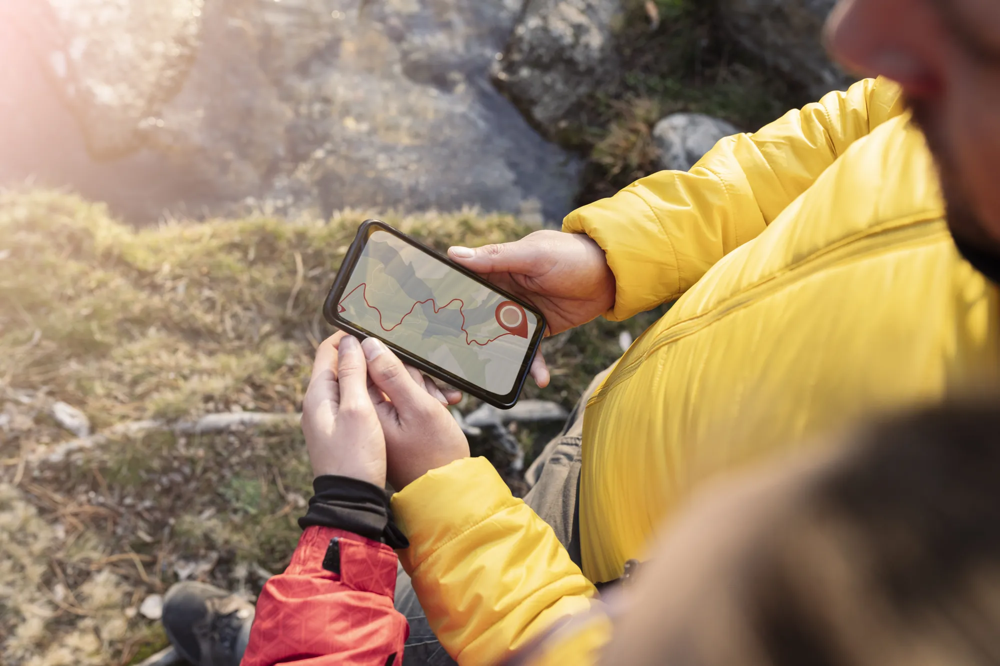
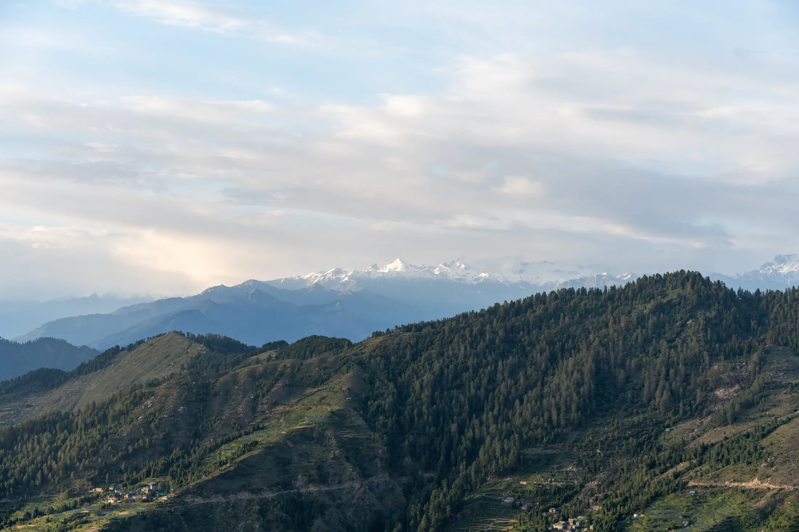

- Most Himalayan treks need a forest or national park entry permit, usually arranged by your operator at a check post. Carry photo ID.
- Foreigners pay more at many parks (for example Rs 600 against Rs 200 at Govind park) and need Protected Area Permits for some regions.
- Rules change often and some are only posted on local notices. Confirm with the forest office, district office or your operator.
Most treks in India need some kind of permission: an entry fee at a forest or national park check post, sometimes a state or police permit, and extra permits for foreigners in border regions. Operators usually arrange the paperwork, but you should know what it is and carry your photo ID. Rules change, so treat this guide as a map of what to ask, not as the final word.
What do Indian trekkers usually need?
For most Himalayan treks there are three layers. First, a forest or park entry permit, bought at a check post. Second, in some states, registration or permission from the district or police. Third, your own papers: photo ID, and on many treks a medical certificate. Himalayan Dream Treks, for example, lists government ID, insurance and a medical certificate for Dayara Bugyal.
Examples from our trek pages and the sources they cite:
| Trek | What is needed |
|---|---|
| Kedarkantha, Har Ki Dun | Govind park permit from the Natwad or Sankri check post: Rs 200 for Indians for 3 days, Rs 50 each extra day. Show ID. Hire a guide from a registered agency. Deposit of Rs 50 a day, refunded on return. |
| Valley of Flowers | A permit valid three days, booked online or at the Ghangaria counter (see our page). Outlook Traveller lists Rs 150 for Indians in 2026; other guides say Rs 200, so confirm. Open 1 June to 31 October 2026, with no camping, drones or single-use plastic. |
| Triund | Register at the Gallu forest check post. In January 2026, Kangra's disaster authority required prior permission from the Superintendent of Police for Triund, Kareri and Adi Himani Chamunda. |
| Kheerganga | Register at the Barshaini checkpost (Rs 100 a person on our page) and show photo ID. |
| Agasthyarkoodam | Book online with the Kerala Forest Department. The 2026 fee was Rs 3,000, a fitness certificate is required and plastic is banned. Onmanorama reported a cap of 70 trekkers a day. |
| Chembra | Forest department permission; the district tourism council (DTPC Wayanad) lists Rs 4,000 for a group of five and says booking is offline only. |
| Sandakphu | Singalila National Park fee (Rs 120 a day for Indians) and a compulsory guide, per Wikivoyage. |
Wikivoyage's Sandakphu page, the Govind park site and the DTPC page are the places where we could confirm figures. The Triund fee and visitor cap on our page come from older reports, so confirm them locally.

What are the state-level rules?
State rules are the part most likely to change. Uttarakhand has been preparing its first comprehensive trekking regulations. ETV Bharat reported on 25 January 2026 that the draft would require every operator to register for five years, require trekkers to submit insurance and a medical certificate, and let agencies suspend treks in bad weather, but that it still awaited government approval. Check the Uttarakhand Tourism site for its status before you travel.
In Himachal, the Kangra district administration announced in January 2026 a ban on all trekking above 3,000 m, as reported by PTI, with SP permission needed for Triund, Kareri and Adi Himani Chamunda, cancelled whenever the Shimla Met office issues a warning. Tribune reported Kangra also ordering registration of every trekker and smaller groups after missing-trekker incidents. Ask the district or your operator what applies on the date you travel.
What do foreign trekkers need?
Foreigners generally pay more for entry. Govind park charges Rs 600 for three days (Rs 250 per extra day) against Rs 200 (Rs 50) for Indians, and doubles the tent fees. Our Kedarkantha page notes that Bikat's package price covers permits only up to the Indian rate. Singalila National Park lists Rs 500 a day for foreigners against Rs 120, according to Wikivoyage. The Chembra trekking fee for foreigners is Rs 8,000 for five against Rs 4,000, per DTPC Wayanad.
In border regions, foreigners need special permits:
- Arunachal Pradesh: a Protected Area Permit, applied for only through an approved local tour operator, with a royalty of USD 30 per person, according to Arunachal Tourism. It says Indian citizens use an Inner Line Permit instead. See the Bailey Trail page.
- Nagaland: all foreigners need a Protected Area Permit, restored after a Ministry of Home Affairs circular of 17 December 2024, and must register within 24 hours of arrival, per Morung Express.
- Ladakh: the LAHDC permit site says protected and restricted areas include Pangong, Nubra, Khardung La and Tso Moriri. See Tso Moriri.
- Lahaul and Spiti: the district site asks foreigners to trek in groups of at least five, tell the nearest police station their route and hire registered guides and porters. That page was last updated in 2018, so confirm.
- Sikkim: foreign trekkers have separate entry and trekking permits; see the Goechala and Green Lake pages on Treqz for what we could verify.

How to avoid problems
- Ask your operator in writing what is covered. Many include permits only at the Indian rate.
- Carry the original ID named on your permit, plus a copy. Check posts will ask.
- Book early for capped treks such as the Valley of Flowers and Agasthyarkoodam.
- Keep cash in small notes. Network is poor and cards often fail at check posts.
- If you trek independently, read our solo trekking guide and ask the local forest office what it requires.
See what each trek needs on its own page in the atlas; foreign-trekker notes are dated and cited.
Permit rules and fees change, sometimes mid-season. Confirm with the issuing office before you travel. Treqz is a free atlas and does not issue permits.
Sources
- Govind Wildlife Sanctuary and National Park: Kedarkantha trek page
- Outlook Traveller: Valley of Flowers opens for 2026
- The Week (PTI): Kangra bans trekking above 3,000 metres
- Tribune: Adventure meets accountability
- ETV Bharat: Uttarakhand to regulate trekking and mountaineering
- Onmanorama: Agasthyarkoodam trek dates and route
- DTPC Wayanad: Chembra Peak
- Wikivoyage: Sandakphu
- Arunachal Tourism: Protected Area Permit
- Morung Express: PAP mandatory for foreigners in Nagaland
- LAHDC Leh: Permit FAQ
- Lahaul and Spiti district: Foreigner section
- Himalayan Dream Treks: Dayara Bugyal
Quick questions
Do I need a permit to trek in India?
Often yes, but it depends on the trek. Many routes need a forest or national park entry permit, issued at a check post, and some states add their own registration or police permission. Operators usually arrange this for you.
What is an Inner Line Permit?
Arunachal Tourism says Indian citizens use an Inner Line Permit (ILP) to enter Arunachal Pradesh, while foreigners need a Protected Area Permit. Check the state's official site for how to apply.
Do foreigners need a special permit to trek in India?
For some regions, yes. Arunachal needs a Protected Area Permit applied for through an approved local operator, Nagaland has required one for all foreigners since December 2024, and Ladakh needs one for areas such as Tso Moriri.
How much is the entry fee for Kedarkantha?
Govind National Park's website lists Rs 200 for Indians and Rs 600 for non-Indians for three days, with extra days at Rs 50 and Rs 250. Your operator's price usually covers the Indian rate only.